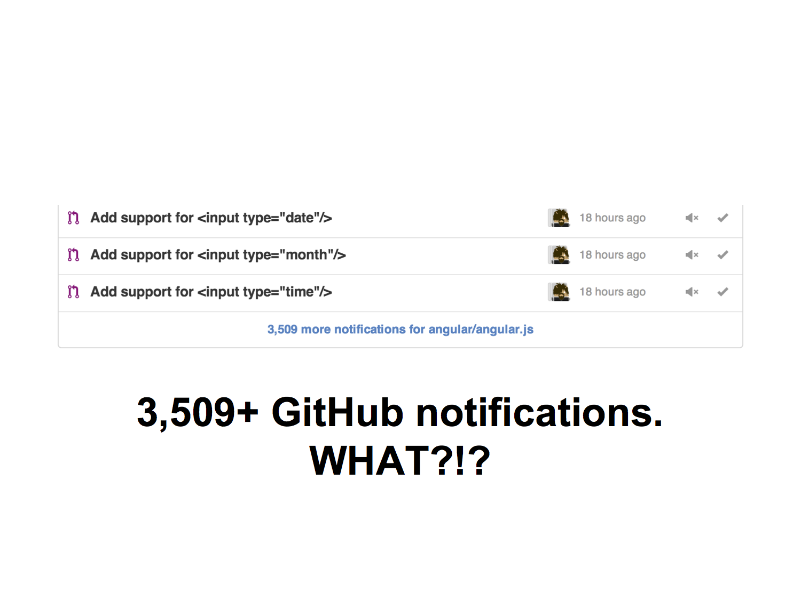
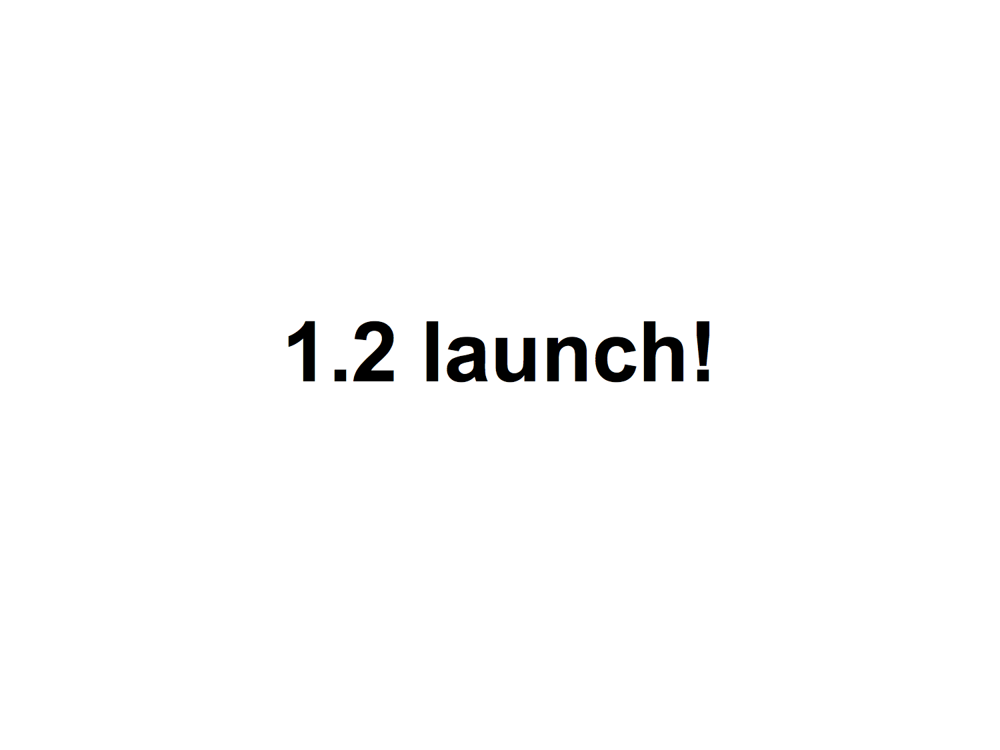
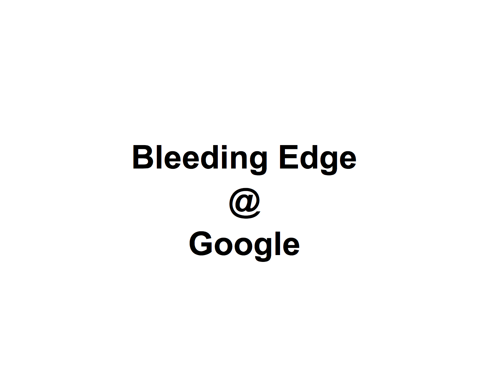
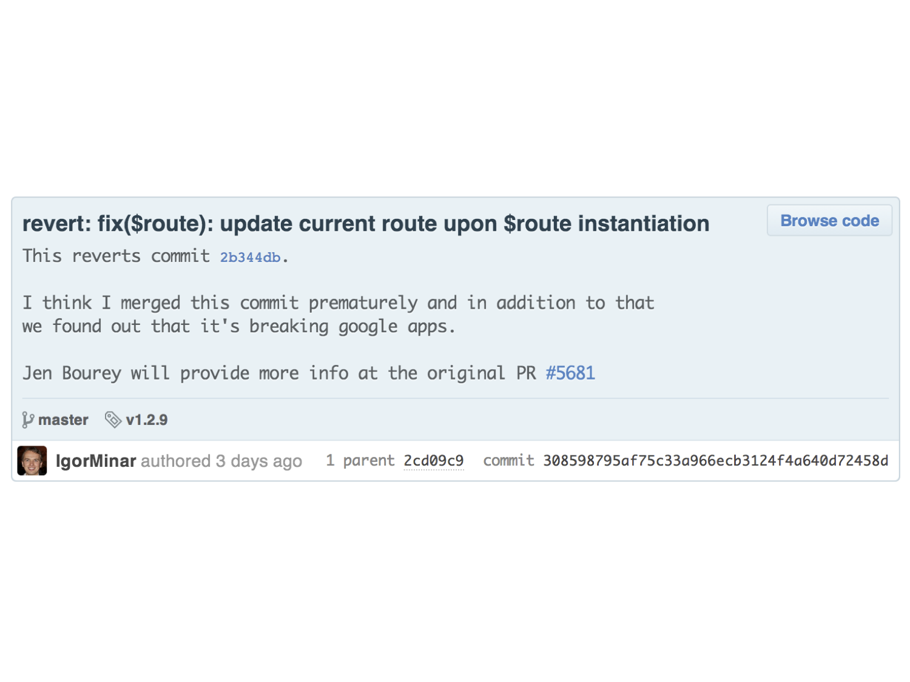
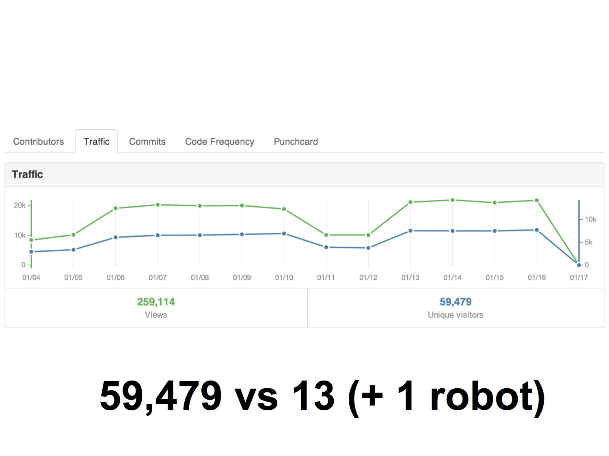
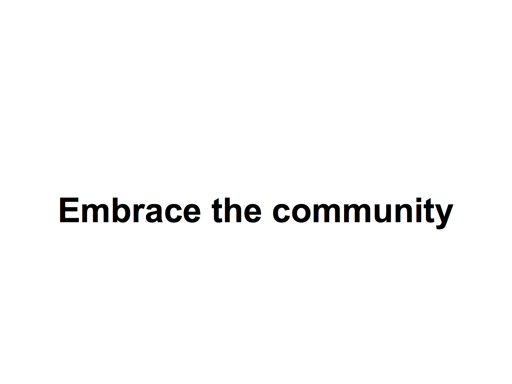
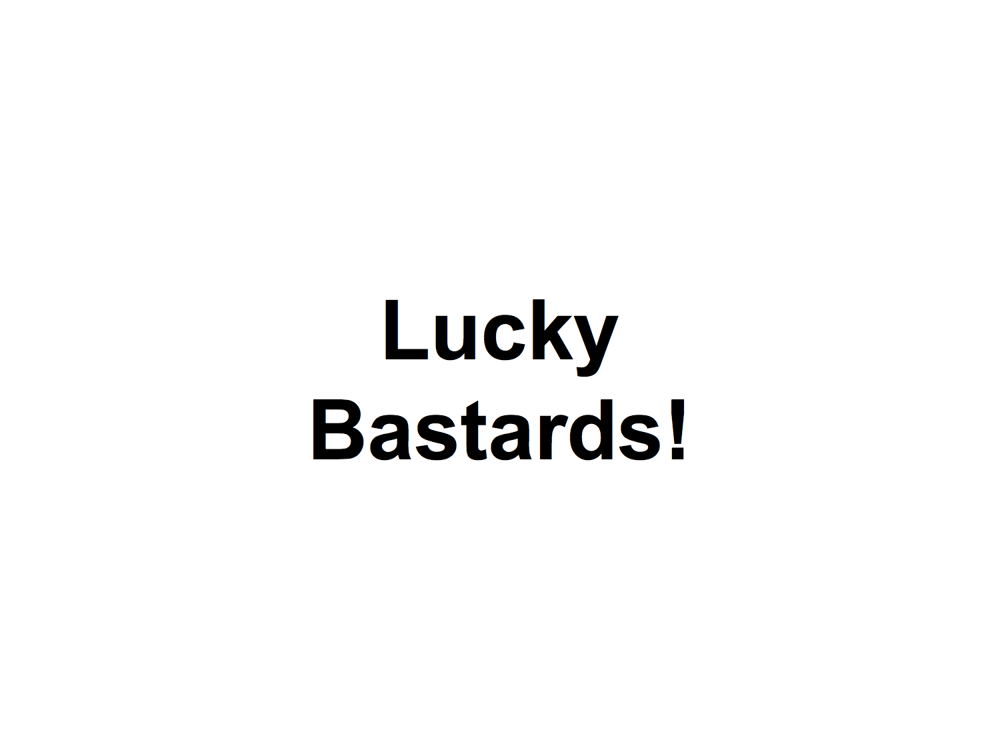
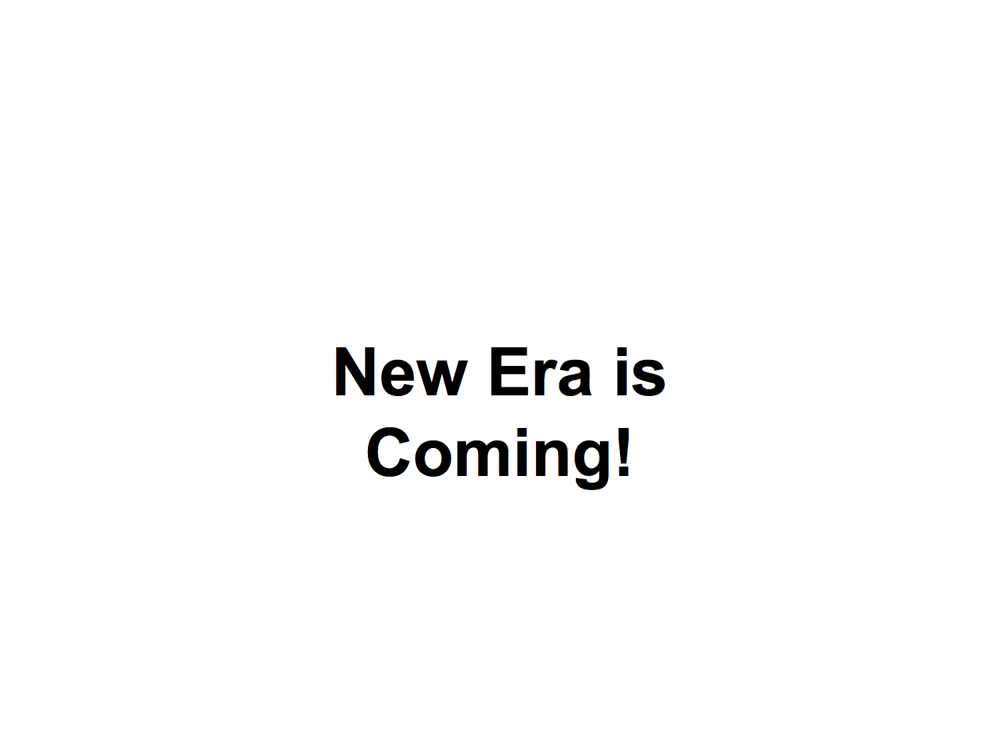
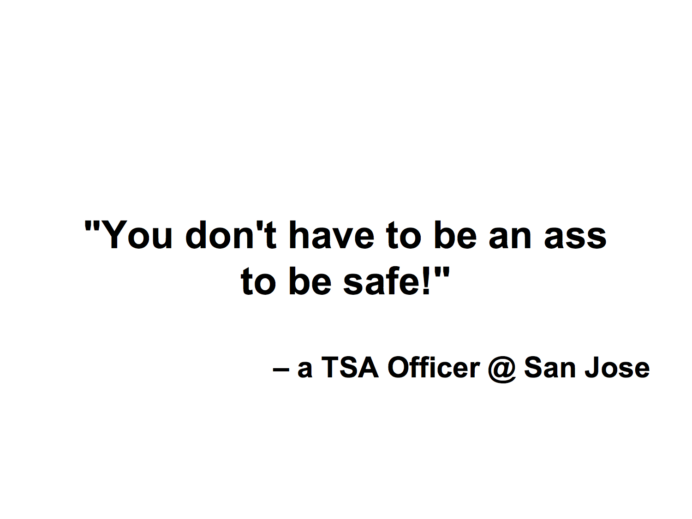

I'm going to share a story with you today. A story about Angular, passion and community.
When I joined Google in 2010, I joined to specifically work with Miško on Angular (actually Google Feedback, because Angular didn't really exist back then). I joined because I saw how passionate he was about the project and I believed that with a lot of work we could make something extraordinary together. Something that would change how developers feel about the client-side web and indirectly change how regular people use the web.
Those were times when the mailing list was silent because only a few crazy souls wandered in there. The pull request queue was empty and Angular had no bugs (literally!).
Shockingly when I joined, Angular had no versioning scheme, releases, irc or g+/twitter account and all the other things that you are familiar with today.
But things were simple. Gathering feedback was quick because only a few people were willing to provide it and we were working with them directly. Making breaking changes was easy, because nobody depended on our APIs. And since there was little documentation to be had, there were few typos and and only a handful of poorly written docs (basically all 5 of them).
I wonder if anyone here remembers how back then we used to have a weekly release schedule which we abandoned as we approached 1.0 and things got more "serious". I can't be happier that we reestablished it again a few months ago. It's one of the best project changes I fought hard for.
I love how the Angular community is maintaining the Wikipedia page about Angular. And updates it after each release with the release version, date and code name.

It really makes it easier for us to pick a unique release name each time. Thank you!
Oh and those release names? We get compliments about them all the time. Back in 2010, we felt that we need a theme for Angular. I believe that it was Brad who suggested superheroes as the theme and naturally we settled on coming up with all kinds of interesting "super"powers as the code names for our releases. We still have a ton of fun coming up with these and it's not uncommon that we get a list of dozens of suggested code names from fans all around the world.

The good old days of 2010. Since then we got better at versioning and releasing (maybe too good - AngularJS 1.0.0rc12 ehm). And really good at answering the mailing list. Especially after Vojta joined at the end of 2010. But as more and more people got interested in Angular we had a harder and harder time to keep up with emails, g+, tweets, IRC and the scariest of all even GitHub.
As you've heard from Miško and Brad yesterday, Angular was not created by a decision of some VP of Engineering. t was born out of love and passion and the project slowly built up its reputation and adoption at Google. So by the time the community growth exploded, Angular was already well established in several key projects at Google.
This allowed us to hire more people. Thank you Google and Brad for making it possible. Oh and if you haven't heard yet, Brad is the most awesome boss one can have!
Brian, Naomi, James, Chirayu, Jeff and Tobias joined us in our office one by one. Pete, Pawel, Julie, Matias and most recently Caitlin joined remotely after having worked their asses off on the mailing lists and GitHub. These are clearly people who are passionate about the project and were in the position to help, so we were excited to share the passion with them and have them on the Angular team.
Despite quadrupling the team in the last year and a half, the community has outgrown us by far more than that.
In the fall of 2012 (a few months after the 1.0 launch), I had the honor to be at the dotJS conference in Paris, France. Vojta gave an inspirational talk about following your passion. Because that's what Vojta does. (I don't mean giving inspirational talks, but following his passion).
He was later followed by @fat (one of the creators of Bootstrap), who talked about how open source is killing passion and creativity. Burned out @fat, talked about how he loves creating new things. He described them as cute puppies. But the problem he faced was that the more passionate he was about a project, the more popular that project became, and the faster the puppy grew into a monster that he had to be a slave to. I remember quite vividly how he described himself being all tired while merging pull requests late at night while his friends were out having drinks and a good time. He finished the talk by challenging the audience to solve this problem, so that we get more people starting amazing projects but not getting burned out because of the maintenance overhead that comes with their popularity.
Back then I wasn't brave enough to admit that I had the same problem. To admit that Angular has grown from a cute little puppy into a monster that was controlling me more than I was controlling it. A bunch of us had dinner with @fat and other speakers that night. We talked about the open source problem, but couldn't come up with a solution.
I was quite depressed about this for a few months, but I wanted my cute puppy back so I started to work on a plan to achieve this, but it wasn't without complications.
In early 2013, we worked with an undisclosed project team at Google who liked many ideas in Angular but wanted a server-side pre-rendering support. So we gave it a shot and created a version of Angular that used the same templates on the server and client and could automatically attach itself to the rendered html once the js bits were loaded in the browser.
It worked really well, better than any other solution at Google at that time. But it wasn't beautiful. And after the project decided to not use our solution for non-technical reasons, we abandoned the effort altogether. We learned how to make it work, but it would take another 2 or 3 reimplementations to make it into something we'd love to use ourselves. More importantly we realized that the two most important reasons for server-side pre-rendering - SEO and performance - would not be an issue for much longer, especially if we focus more on the client-side.
This learning adventure had its toll on the AngularJS project and was one of the reasons why 1.2 release got significantly delayed. To this day, I think that it was a worthy experiment because it taught us a lot.
While we focused the rest of 2013 on shipping 1.2 which was long overdue, we were constantly being amazed by the things that people had created with Angular and that gave us a boost to make 1.2 quite amazing.
But to get to those results we needed to iterate. Iterate a lot. Take the animations we launched in 1.2 as an example. Those had been rewritten from scratch 3 times before we were happy with the results. Each iteration takes time. And it takes even more time when the infrastructure around the project is crumbling under our feet.
The CI server that I built for our project a few years ago started to show signs of inability to scale with the growth of our team.
More importantly, by making the testing infrastructure available only to the core team, we made it impossible for the community to get automated feedback on the PRs they were submitting. This meant more work for us! Because now we had to deal with broken PRs that were often stale and needed a ton of work in order for them to be merged. This, combined with the post-1.0 popularity made the PR queue grow faster than ever before.
We tried hard, we used to have dedicated weekly PR days, where we would spend the whole day just by reviewing, fixing and mering PRs.
We were making a dent in the PR queue and yes, we were so obsessed by making progress in this area that we built several dashboards to show us how we were doing.
We were so desperate that we even started building robots to help us. Mary Poppins now watches our GitHub repo and guides contributors in creating a PR that is easier for us to handle.
Some of you have nice conversations with her…
The bad news for us was that the graphs indisputably showed one thing - whenever we pushed harder and handled more PRs per week, we would get even more PRs in the following weeks. I assume that this is because people were encouraged by our activity so they wanted to contribute even more!
Because cross-browser compatibility was one of the biggest issues for the submitted PRs – superseded only by a lack of documentation updates and tests – we decided to share our testing infrastructure with anyone willing to contribute to Angular (or in fact any other project).
Karma, the spectacular test runner that Vojta and folks around him created, worked really well across browsers at that time already and we fully relied on it for all of our testing. But making browsers available to Karma was not a solved issue. At least not on the GitHub scale that we were dealing with.
At around the same time I met Santi from SauceLabs who was nothing but energetic and ready to help us solve our problem using the SauceLabs farm of VMs with browsers. Initially it appeared that the integration would be simple, but nothing in engineering is simple if it involves as many moving parts as our Travis, Karma and SauceLabs integration.
The guys from BrowserStack didn't want to be left out either. So we worked with them as well and after more than half a year of debugging issues and fixing problems at various layers, the setup with both SauceLabs and BrowserStack works quite well and all of our PRs are being tested on the same or bigger number of browsers than our original core-team-only ci server. Since the builds are fully parallelized this solution is faster even for the core team. It was only passion and willingness to iterate and take a small step after a step that enabled us to make this a reality.
We launched 1.2 and instead of a big celebration we were fighting fires due to the "underscore" issue. An innocently looking breaking change, that we put in because we thought that it would make Angular better, completely broke everyone using certain database backends or third-party REST services where underscores were used in APIs.
We tested the change on hundreds of apps at Google and since it wasn't causing any significant issues, we decided to proceed with it.
We screwed up! It was an honest mistake and we reverted the change quickly, but in the meantime were being accused of all sorts of things as if we set out to make life difficult to people who trusted us.
Similarly, when we announced that we are going to drop IE8 support in 1.3, many revolted.
The honest truth is that neither Google as the main sponsor of AngularJS, nor anybody on the core team needs an IE8 support for their apps. So for already more than a year, we've been supporting the developers with apps running on IE8 just out of pure passion for the project and ambition to provide great developer experience.
When we announced AngularDart in June of 2013, only a few cheered. Primarily because of concerns that "Google was abandoning AngularJS". Nothing could have been further from truth, but it's hard to fight uninformed gossip, especially when there is one thousand more important things to spend our time on. The only way to combat it was by proving that we were serious about both AngularJS and AngularDart.
I'll be honest with you guys, I wasn't excited about AngularDart at first. But Googlers really wanted to be able to use Dart and Angular together. It wasn't easy, but we agreed to do it.
But looking back now, I think it was one of the best things we've done for AngularJS. I know, it sounds ridiculous, but it's the truth.
Over the last year we have worked very closely with the Dart team. And you know what we learned? That they are very passionate about making web faster. I might not always agree with some of the details of their decisions, but nobody can argue with me that these guys aren't sharp and passionate about what they do.
Thanks to this great collaboration with the Dart team, we were able to start building Angular from scratch. Adjusting it to the new language and ecosystem and learning a ton along the way. We learned from many mistakes we made in AngularJS, and as expected, introduced a bunch of new ones ;-) But what matters the most is that we are now taking the learnings from AngularDart and bringing them back to AngularJS.
Some of the performance improvements that were initially pioneered in AngularDart are already being used in production by AngularJS apps. Similarly, the DI system that we built for Dart is heavily influencing the future of DI in JS as you've already seen in Vojta's talk about di.js. Brian is going to talk later today about zone.js a project with mind-blowing possibilities that we started after Florian from the Dart team showed us this concept implemented in Dart.
Just the sheer opportunity to being exposed to different way of thinking and ability to start from scratch is so refreshing and really boosts creativity. I'm excited to see that the results of the AngularDart effort are now making the AngularJS and soon the wider JavaScript platform better.
After 1.2 was released, we made a promise to ourselves to release faster and release often. Bring back the transparency and predictability we enjoyed in the early days, but now at a much larger scale. Not an easy task. Maybe it was my passion for Daft Punk and their song Harder Better Faster Stronger or everyone's passion for Angular, whatever the cause was, we did it despite many saying that it was impossible.
It's not a well known fact that Google uses pre-release versions of Angular. Imagine what would the development look like if we were able to push a commit to the master branch on the main GitHub repo and within hours hundreds of Google apps would start to use that version. We do that already. We've been doing that for almost a year now. It was a game changer for us. Not only it forced us to get organized enough to keep the master stable at all times but it significantly improved our test coverage in ways no synthetic test suite can. On a rare occasion, when a regression is merged into master, we get the feedback before we even get to cut a public release. And since we can easily track the regression down to a particular commit, reverting them and making master stable again is easy.
At Google most of the software is not versioned and we have an elaborate continuous integration service which constantly tests every component in the google-wide code base and all the components that depend on it. This allows us to iterate quickly. Deliver fixes to Google apps often within hours of the initial bug report.
I'd love non-Google applications to participate in such continuous integration scheme. This is why, back in December we started pushing pre-release builds of AngularJS to Bower.
Pushing builds to Bower is only half of the iteration cycle. We also need to be able to receive your feedback, so that we can act on it. This is why a while back we established a daily team triaging party. No alcohol is served, but lots of bugs and PRs get reviewed and categorized on a daily basis. We still have a small backlog of old issues to go through, but we are doing better than ever at acting on regressions, merging small fixes and providing feedback on big ones.
All of this sounds great and wonderful, but in the meantime whenever we look at any Angular stats, whether it's the github activity (like opening PRs/issues) or traffic on any of our sites, mailing list, g+/twitter stream we clearly see one thing. No matter how much harder we work or how many more people we hire, we can't keep up with with the community growth out there.
GitHub recently released a new feature that allows us to see traffic on our repositories. The numbers answered some of our questions but also made us more depressed.
Many successful projects have been in this situation before. Some didn't make it because the core team burned out and got overrun by the community, but there are some that embraced the community just like we did in our early beginnings and that's what we've been doing again at much larger scale in the past several months. And I believe that this can work.
But first we need to break the us vs them barrier. Often when I talk to people from the community I feel that they are giving us more respect than what we deserve. We are just lucky bastards that have Google behind our backs and get paid for doing what we love. It's hard work, don't doubt that, but many of you with the same passion could do it as well.
In fact most of the core team, including me, started on GitHub, digging in the code and suggesting improvements, sending out PRs.
Over the weekend, I was working in my small garden and my 2 year old son really wanted to help. Often when I do stuff around the house, it's too dangerous for him to help, but this time it wasn't and he was very eager. He really wanted to pick up weeds and throw them in the yard bin. The problem he had was that he wasn't tall enough to reach the top. I took a stool and a box that we just received and "helped him help me". (Only to later find out that the box he was jumping on contained a delicate light fixture). But the point is that we had a lot of fun working together and I was able to share my passion for gardening with him.
Only as I was taking these photos to share with my relatives, I realized that this is exactly what we've been doing for the Angular community. The Travis + SauceLabs build system, more tests and pre-commit checks, pre-release builds in Bower and daily triage just to name a few.
We want *you* to be able to make Angular better. But at the same time, we want to deal with the issue of the team growth vs community growth. The threat of burning out the core team. The possibility of overlooking another "underscore" issue or dropping a browser support to the big surprise of some of you. And don't get me even started about the us vs them thing.
This is why we are forming the Angular Working Group. Let me repeat a "working group". Not a committee or an experts group, but a fellowship of folks, individuals or representatives of various companies, that are as lucky as we are to be able to dedicate some of their time and expertise to making Angular better.
We've already hand picked a few of you based on the quality and regularity of your contributions to AngularJS. We are primarily looking for people as passionate about Angular as we are. People that work with Angular professionally on a daily basis and care about keeping the code base stable. We'd love to help them start using pre-release versions of Angular just as we do at Google. Ideally, the members of the group should be able to delegate some of their responsibilities to others in their trusted circles. This way we can get more voices heard and make Angular harder, better, faster, stronger. This working group will enable people outside of Google to have a direct impact on the future of the project, supposing that they are willing to invest their time and effort in making this future a reality.
I believe that this can prevent another "underscore" issue from occurring and will also provide a platform for those interested in supporting legacy browsers to do so, without slowing the rest of Angular down.
I'm happy to announce that the following people have accepted our invitation to be the founding members of the Angular working group:
Dave Geddes (Domo) - Dave is plain awesome. Just look around at this conference that he (with the help of others) organized. In addition to organizational skills, he's technically very strong and has provided us with a ton of feedback on Angular.
Michał Gołębiowski (Laboratorium EE) - In addition to sending us really good PRs, Michał has been providing us with ultra-high quality feedback on GitHub for a while. He already maintains a fork of Angular with some feautures that we couldn't support due to IE8.
Karl Seamon (DoubleClick) - Karl is a wizzard within the DoubleClick team. He contributed a ton of performance improvements to Angular as as you'll see later today he knows a thing or two about Angular. In general I'm trying to encourage crosspolination of Google and non-Google ideas within the Angular ecosystem and that's why I invited Karl to join this group.
Miško and I will represent the Angular team
We have more people in mind and will be adding them to the group over time following the same criteria we used to pick these guys. High quality contributions sustained over longer period of time are the key to being considered for the working group.
While not everyone can be part of the working group (otherwise nothing would ever get done), everyone will benefit. The project transparency will increase the decision making will be distributed and we'll have more muscle power to attack more and bigger challenges.
Speaking of bigger challenges, there is one that all of you should be aware of. It sneaks around under different names. Web components, EcmaScript 6, Object.observer(), ever green browsers and others. It's the modern web platform that we've been waiting for for so long. It's coming and it will be here sooner than most of you realize. We need to get ready! And as you've seen in the Vojta's dependency injection talk and James's AngularDar talk, we can do amazing things when we start from scratch, without the baggage of legacy browser support and constraints of old web platform APIs.
We decided that Angular 1.x will live on and will be the Angular for the web platform of today, while AngularJS 2.0 will the be version of Angular for the platform of the future. Future with crazy possibilities, based new standards with the focus on modularity and better code reusability.
But then again…
… we must find a fine balance between supporting and improving the existing Angular, while building the best Angular yet.
I've been particularly bad at finding this balance. I owe a big apology to Rafael from the Chrome team, whom I let down by not being the partner in crafting some of the standards that the future version of Angular will use. Just like @fat at dotJS, I've been overwhelmed by the monster I helped to create and found it hard to get out. But the changes we've made over the last few months and the continual increase in quality of community contributions make me believe that the monster is being contained. And I will be able to dedicate a significant portion of my time to forward looking stuff that all of you will benefit from in 1 year or so.
This is why I need you to step up! Help each other. Help us triage issues and review pull requests. Answer questions on the mailing list, stackoverflow etc.
The future version of Angular will be completely modular. Based on ES6 and the new module system. I don't want to talk too much about the details, because unless we have at least a good foundation, I'd be talking about stuff that doesn't exist and will likely never exist.
We started however and the di.js, zone.js and a nifty little logging tool diary.js are some of the pieces we are building Angular 2 upon. If you look at any of these projects, you'll notice that they are not Angular specific as it was the case of Angular 1.x. We are building a set of libraries that will work great whether you choose to use them for building an Angular web app or a server-side component for node.js. The era of monolithic frameworks is going to be soon over. The future is all about loosely coupled but well aligned components that can be used together in various combinations depending on the application needs.
It's still a bit too early for production apps to rely on many of the standards and web platform apis that are under development. But that won't be the case for much longer. So if you have high tolerance for pain and crave the possibility to live life on the bleeding edge, then keep an eye on our the projects that will form Angular 2.0. But don't stop there. Get involved. We want you to help!
This conference has been a surreal experience for me. And a bit of an emotional rollercoaster. I've met many incredible people and experienced many interesting things here.
Just as I was flying out of San Jose, I had the best experience passing through the airport security. I met the nicest TSA officer ever and I actually stopped and thanked him for being so nice. Do you know what he told me? He said "I believe that you don't have to be an ass to be safe".
This suck with me and I thought about it a lot. And I came up with this:
Yesterday I met the nicest person here. I mean, all of you are nice, but this guy is very special. And he had a tatoo on his forearm that said: "Work Hard. Be kind. Do more". I think all of us could use a tatoo like this on our forearms, just to remind us what our values are and what we are here for.
While working on these slides in my hotel room. Brian and I decided to decorate our hotel room door with Angular made out of Angular. (Actually, I just grabed Brian and made him do this with me). As we were decorating, Adam walked by. I've never met Adam before, but I asked him if he wanted to help us. He said yes and joined us in building our work of art. We had a ton of fun together and chatted quite a bit. It was great, I really enjoyed it. I'd love to have a lot more experiences like this one.
Some describe Angular as a library, others correct them that it's a framework. Miško is still a bit dillusional and claims that it's an html compiler. For me it's a passion. It's desire to iterate and become better. It's a way of life and I want to share it with you.

The video recording of this talk can be found on YouTube.